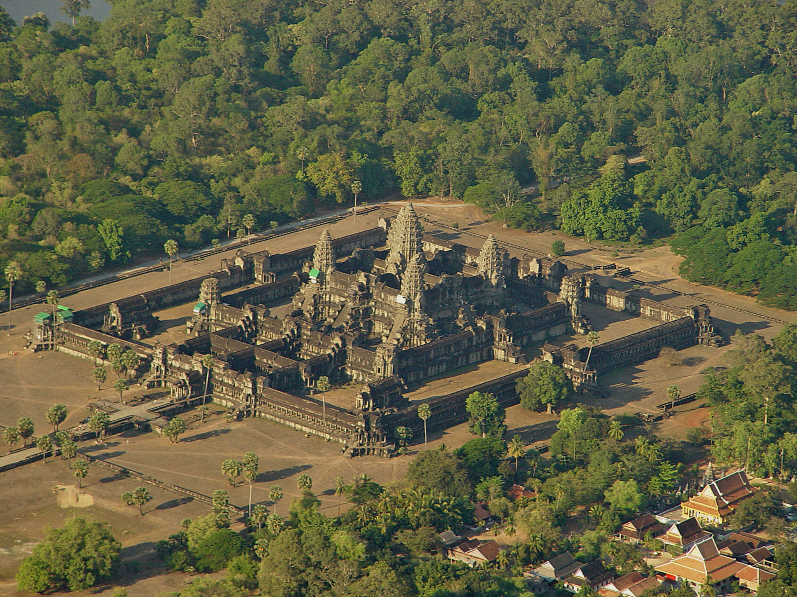

 Siem Reap (Khmer: សៀមរាប, Siĕm Réab [siəm riəp]) is the second-largest city of Cambodia, as well as the capital and largest city of Siem Reap Province in northwestern Cambodia.
Siem Reap has French-colonial and Chinese-style architecture in the Old French Quarter and around the Old Market. In and around the city there are museums, traditional Apsara dance performances, a Cambodian cultural village, souvenir and handicraft shops, silk farms, rice paddies in the countryside, fishing villages and a bird sanctuary near Tonlé Sap, and a cosmopolitan drinking and dining scene. Siem Reap city, home to the famous Angkor Wat temples, was named the ASEAN City of Culture for the period 2021–2022 at the 9th Meeting of the ASEAN Ministers Responsible for Culture and Arts (AMCA) organised on Oct 22, 2020.[3]
Today, Siem Reap has many hotels, resorts, and restaurants, due to its proximity to the Angkor Wat temples, Cambodia's most popular tourist attraction.
The name "Siem Reap" can be translated to mean 'defeat of Siam' (siem in Khmer), and is commonly taken as a reference to an incident in the centuries-old conflict between the Siamese and Khmer kingdoms, although this is probably apocryphal. According to oral tradition, King Ang Chan (1516–1566) had named the town "Siem Reap" after he repulsed an army sent to invade Cambodia by the Thai king Maha Chakkraphat in 1549.[4] Scholars such as Michael Vickery consider this derivation to be simply a modern folk etymology, and maintain that while the names Siem Reap and Chenla, the old Chinese name for Cambodia, may perhaps be related, the actual origin of the name is unknown.[5]
The traditional tale claims that King Ang Chan of Cambodia tried to assert greater independence from Siam, which was then struggling internally. The Siamese king Chairacha had been poisoned by his concubine, Lady Sri Sudachan, who had committed adultery with a commoner, Worawongsathirat, while the king was away leading a campaign against the Kingdom of Lan Na. Sudachan then placed her lover on the throne. The Thai nobility lured them outside the city on a royal procession by barge to inspect a newly discovered white elephant. After killing the usurper, along with Sudachan and their new-born daughter, they invited Prince Thianracha to leave the monkhood and assume the throne as King Maha Chakkraphat (1548–1569). With the Thais distracted by internal problems, King Ang Chan attacked. He seized the Siamese city of Prachinburi in 1549, sacking the city and making slaves of its inhabitants. Only then did he learn that the succession had been settled and that Maha Chakkraphat was the new ruler. Ang Chan immediately retreated to Cambodia, taking captives with him. King Maha Chakkraphat was furious over the unprovoked attack, but Burma had also chosen to invade through Three Pagodas Pass. The Burmese army posed a much more serious threat, as it captured Kanchanaburi and Suphanburi. It then appeared before Ayutthaya itself.
The Thai army managed to defeat the Burmese, who quickly retreated through the pass. Maha Chakkraphat's thoughts then turned to Cambodia. Not only had Ang Chan attacked and looted Prachinburi, turning its people into slaves, but he also refused to give Maha Chakkraphat a white elephant he had requested, rejecting even this token of submission to Siam.[6] Maha Chakkraphat ordered Prince Ong, the governor of Sawankhalok, to lead an expedition to punish Ang Chan and recover the Thai captives. The rival armies met, and Ang Chan killed Prince Ong with a lucky musket shot from an elephant's back. The leaderless Thai army fled, and Ang Chan allegedly captured more than 10,000 Siamese soldiers. To celebrate his great victory, King Ang Chan supposedly named the battleground "Siem Reap", meaning 'the total defeat of Siam'.
In reality, surviving historic sources make this derivation appear unlikely, since they date the decline of Angkor to more than a century before this, when a military expedition from Ayutthaya captured and sacked Angkor Wat, which began a long period of vassal rule over Cambodia.[7] The 1431 capture coincided with the decline of Angkor, though the reasons behind its abandonment are not clear. They may have included environmental changes and failings of the Khmer infrastructure.[8]
From the 16th to the 19th centuries, infighting among the Khmer nobility led to periodic intervention and domination by both of Cambodia's more powerful neighbors, Vietnam and Siam. Siem Reap, along with Battambang (Phra Tabong) and Sisophon, major cities in northwest Cambodia, was under Siamese administration and the provinces were collectively known as Inner Cambodia from 1795 until 1907, when they were ceded to French Indochina. During the 18th century, under the rule of the Ayutthaya Kingdom, it was known as Nakhon Siam ('Siam's city').[9]